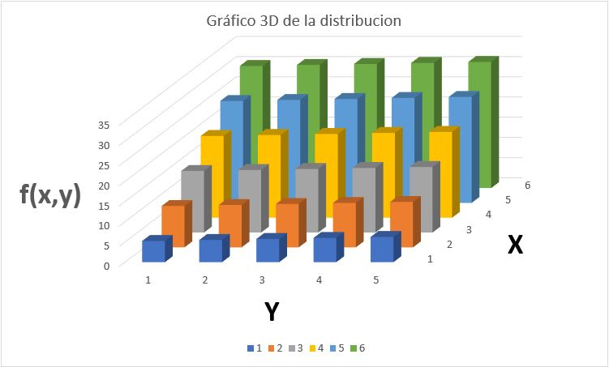

La función de probabilidad con la que se trabajó el ejercicio es: f(X,Y)=5X+Y/4. Los resultados se pueden observar en la siguiente tabla.
Con los datos anteriores se realiza la tabla de distribución de probabilidad conjunta, en este caso expresada en porcentajes.
A continuación se tienen dos tablas donde: la tabla de la izquierda representa la distribución de probabilidad conjunta expresada en fracciones, por otro lado, la tabla de la derecha representa el producto de las distribuciones marginales. Puesto que más de uno de los productos es diferente del valor de la distribución de probabilidad conjunta (celdas de color naranja) es posible afirmar que las variables aleatorias son dependientes.
Finalmente con estos datos se realiza el cálculo de la covarianza y el coeficiente de Pearson, además de realizar una gráfica 3D que relaciona los datos:
El hecho de que tanto la covarianza como el coeficiente de Pearson sean valores negativos indica que la variable aleatoria dominante es Y, además de que se rectifica que las variables son dependientes. En la gráfica se puede observar que los valores más altos son obtenidos conforme Y aumenta, indicando la dominación anteriormente señalada.
El archivo Excel con el ejercicio completo puede ser descargado dando click aquí